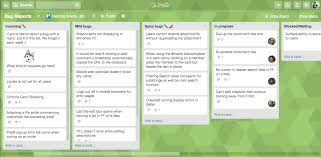

Assignment 1
1.1 Describing the purpose of IT in modern business:
Communication
Communication with customers is one of the First and foremost, IT technology
affects a firm’s ability to communicate with customers. In this busy business
environment, it is necessary for employees to interact with clients quickly and clearly.
Business caulture and class realtions

IT Technology creates a team dynamic within a business because employees at different locations have better interactions. Cliques and social tensions can become a nightmare for a business; technology often helps workers put their different backgrounds aside.
Security
Most businesses of the modern era are subject to security threats and scams. IT Technology can be used to protect financial data, confidential executive decisions and other proprietary information that leads to competitive advantages.
Research capacity

IT technology create research opportunity for businesses to find new markets and extend them self almost without financial risk. [1]
[1]
https://www.oksbdc.org/why-is-technology-important-in-business/
1.2 Describing methods, skills and resources needed to complete digital projects successfully – what do you need to make projects successful? What tools? What skills?
It is a lot of different methods, skills and resources to complete a digital project successfully.i believe ability to understand the difference between methods and choice correct source all are skill and resources are including all reliable information we have which could be cybersource or actual sources.
To finish a digital project successfully we need all the element which has been mentioned above choice correctly and have knowledge and skill to use them.
Depend on the method we should choose our tools, all programming software are our tools and obviously we should have skills to use our tools.
1.3 Plan and carry out tasks using IT – e.g. making your website. How will you plan it? Include a link to your Trello board.
First, you’ll want to consider your domain name.
Ideally, you’ll be able to keep your existing domain name for minimal customer confusion—but if you have the opportunity to switch to a better one, you’ll want to do it before building your new site.URLs Structure,If your URLs are made up of seemingly random characters, on the other hand, you’re better off creating a new URL structure with your new site. However, be sure to keep a log of these URLs so you can set up appropriate redirects later.
Research your CMS options
There are a few different ways to build a site, and the one you choose is largely a matter of personal preference.Your first option is to build a straight HTML site, meaning that the entire site will be coded from the ground up. These sites typically take longer to build, but allow for full customization of both appearance and functionality.The upside to HTML sites is that if something goes wrong, the developer who built it won’t have much of an issue, identifying and fixing the issue. However, making site updates requires a bit of coding knowledge.
Your other option is to use a content management system, or CMS, like WordPress. When you build a site with a CMS, you get an admin panel that makes logging in and making changes a simple process. If you don’t have any coding experience but want to be able to make site updates on your own, this may be a better option.
However, since CMS are built by third-party developers, it can sometimes be more challenging to get the same level of customization as an HTML site.
Determine what functionality you need
If all you want is a simple site with text, images, and contact information, the build process will be pretty straightforward. But if you’re looking for additional functionality, you’ll need to determine what you want before hiring a developer.Knowing what your site needs to do will make it much easier to select a developer that’s right for your project.
Once you know where you stand with your project, you’ll need to select a web designer or developer to design and launch your site. If you have an in-house development team, you won’t need to worry about this. But if you’re like most companies, you’ll need to hire an agency or independent developer.
Choose a web designer or developer
This step should not be taken lightly, as the designers you work with will ultimately be responsible for the success of your company’s site. Research your options, and make sure that the designers you’re considering have experience with the specific kind of work your project will involve.
If you’re on the fence about a specific agency, we recommend asking for names and contact information of their clients. When you speak with people who have already worked with a particular agency, you’ll get a better sense of whether or not it’ll be a good fit.
Budget
After you’ve found the right developer, you’ll want to make sure that you’re on the same page in terms of cost before they start working.
Review the project, then ask for estimates of both time and cost. These will vary depending on the size and experience of their team, but it’s important that you both have the same set of expectations.
If you’re not sure of whether or not you’re getting a good price, feel free to check out our project quote calculator! This is how we determine pricing for our clients, and will give you a general idea of how much your site should cost.[3]
[2]
https://www.webfx.com/web-design/website-planning-process.html
1.4 Describe the risks that might impact digital projects – what causes digital projects to fail? Why?
In pursuing digital projects, risk is all around us. Our project management team's philosophy is that if you can’t find a risk in your project, you are simply not looking hard enough.
Lack of Visibility of all Projects
A common reason why projects fail is related to visibility. All three tiers of the project team, executive management, project managers, and team members, need access to the right level of information at the right time.
Unclear Project Objectives
Most organizations have more opportunities and project initiatives than they can ever hope to fulfill. Many companies embark upon more initiatives than they probably should, causing over worked and often unhappy team members.Executives management play a key role in this issue. Some organizations have not adequately defined their goals and strategies. If top management is not clear on project priorities, then it follows that the entire organization is also unclear about which projects are the most important. Many organizations get so busy that they forget a key component of success is taking the time out to meet and discuss goals and strategies to reach those goals.
No Visibility into Resource Workload
Following the lack of project prioritization are usually overloaded resources. It is a circular problem as well. That is, because executive management has no visibility into all of the projects and tasks the team is performing, they are often laboring under the belief that the organization can achieve more than it is capable of in terms of sheer workload.
Gaps in Communication
Once a project is in full swing, a common issue is communication. Most project teams use email to communicate about their projects and tasks. The biggest complaint here is that project communication resides in each individual's email box. So, if a new resource joins the project, there is no centralized view of the project history.[3]
[3]
https://www.projectinsight.net/white-papers/four-common-reasons-why-projects-fail
1.5 Describe how you would go about selecting and using IT systems and software – how do you select the right kind of technology for the job?
When it comes to organizing work, there are a lot of options available. To do apps are great for organizing personal workload. But organizing a team’s workload needs dedicated project management software that enables communication and collaboration.
That’s why selecting the right project management software is so important. The right tool will impact project success and help the project manager ship on time. It can actually make or break a project.
Outline your needs
Selecting the right project management software starts with a clear, honest assessment of what you need. First things first, make sure that your team is ready to take on a new solution. There are a few points to consider here.
Look for alternatives
Once you’ve outlined all your requirements for a project management solution, it’s time to start the search. Start looking for providers that match your needs. You can ask for recommendations from fellow project managers, try search engines, trade magazines, specialty reviews. The more you look, the higher the chances that you’re not overlooking any potential match. You should gather as many providers as possible in order to have a wider pool to choose from.
Once you’ve built a strong list of providers, it’s time to narrow down your selection. Cut your list to about five providers to test and to choose from. While doing this, consider the technology and how much it would cost to switch to that solution. Some providers may obviously fall out of your price range, while others might not fit your team’s style. Additionally, other providers don’t fit with your product management methodology or be a poor match from a cultural point of view.
Test-drive and evaluate against your needs
This might be the hardest part. This is where you actually try project management solutions to see how well they match your needs.
Contact different project management software providers for demos. However, the best way to see if there is a match is to actually try each shortlisted provider. Demos show you how the product generally works, but you get to see for yourself if it really fits your needs during a trial.
Evaluate costs
Before you make the final decision, consider costs for different project management providers.
Last, but not least: check if it fits with your team’s communication and collaboration styles. Anything that does, will enhance those. Tools that don’t can have a negative impact on internal communication and collaboration.
Implementation
Even if you’ve selected and signed on a project management software provider, the process isn’t over yet. You also need to implement it.
Project management software is not just for the project manager, it’s for the team. Outline a plan that shows how your team will start using the new solutions. It might be a good idea to schedule training sessions, if necessary. Also, make sure you have all the necessary tools, that integrations are completed and that all important documents are available in the new solution.
What’s more, as a project manager, don’t forget to lead by example. Use the new solution as much as possible, answer any questions about it.[4]
[4]
https://blog.teamweek.com/2017/10/guide-select-project-management-software/
1.6 Describe and provide analysis on how your chosen technologies have helped you achieve your outcomes. – How has Trello helped you plan and how can git and GitHub help with your codes version control

Four Main Features Of Trello
Each card can be color-coded with a bar. Each color can refer to a different client for example.
The icon showing the gravatar/picture of the user shows who is participating in that card. You can invite people to a card so they can leave feedback and updates. Or if you want to assign them that task. If a task is assigned, a due date can be added and a reminder sent when the due date is near. When the card is updated, everyone on that card is notified.
The background of each Trello board can be customized. Trello gives you backgrounds or you can upload your own. Being a Lego fanatic, I uploaded this Lego one. But if you are a company, you can customize your Trello board with say the company logo.
Cards can be moved to other boards, copied to other boards, or archived when finished.[5]
[5]
[5]
https://trello.com/b/MiXu9oat/web-design
Git
is a version control system for tracking changes in computer files and coordinating work on those files among multiple people. It is primarily used for source code management in software development, but it can be used to keep track of changes in any set of files. As a distributed revision control system it is aimed at speed, data integrity, and support for distributed, non-linear workflows.
Basically, git is version control system that allows you to work together with other developers and all of you will be using the same codebase without looking for a ‘flashdrive’ to copy code from one computer to another. With Git you can see what others are working on, you review their code, you can view your previous changes, you can rollback to your previous code. [6]
GitHub
To be very crisp about it, GitHub is a file or code sharing service to collaborate with different people.
GitHub is a highly used software which is typically used for version control. It is helpful when more than just one person is working on a project. Say for example, a software developer team wants to build a website and everyone has to update their codes simultaneously while working on the project. In this case, Github helps them to build a centralized repository where everyone can upload, edit and manage the code files.
GitHub has various advantages but many people often have a doubt as to why not use dropbox or any cloud based system? Let me take the same example forward to answer this question. Say more than two software developers are working on the same file and they want to update it simultaneously. Unfortunately, the person who save the file first will get precedence over the others. While in Github, this is not the case. Github document the changes and reflect them in an organized manner to avoid any chaos between any of the files uploaded.
Therefore using GitHub centralized repository, it avoids all the confusion and working on the same code becomes very easy.[7]
[6]
https://codeburst.io/so-wtf-is-git-fa7daa0e0271
[7]
https://www.edureka.co/blog/how-to-use-github/
1.7 Describe legal guidelines and constraints that impact digital projects – How does GDPR impact digital projects?
GDPR stands for General Data Protection Regulation and is designed to protect your personal information. GDPR is the law that governs your personal data; every company in the UK needs to abide by it and let you know how your personal data is used.
Financial penalties
Under GDPR, organisations who fail to comply and/or suffer a data breach could face a fine. In the most serious cases, this fine could be up to 17 million euros, or 4% of a company’s annual turnover. This upper limit far exceeds the current maximum fine of £500,000 allowed under the Data Protection Act.
Damaged reputation
More than either of the above consequences, perhaps the biggest ramification of failing to comply with GDPR is the damage to your company's reputation, which can sometimes be beyond repair.
Compensation for damages
Under GDPR, individuals also have the right to claim compensation for any material and/or non-material damages which result from an infringement of the regulation. The most serious data breaches could result in a high volume of claims, which can be incredibly costly.[8]
[8]
https://www.core.co.uk/blog/blog/ramifications-failing-comply-with-gdpr